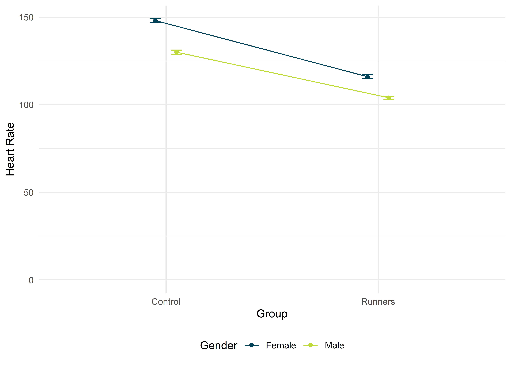

Faktorielle ANOVA

Mit einer (allgemeinen) faktoriellen ANOVA kann man mehr als zwei Gruppenmittelwerte in Abhängigkeit von kategorialen Prädiktoren vergleichen. Da die ANOVA ein Omnibus-Test ist, und so nur anzeigt, ob irgendwo ein signifikanter Unterschied zwischen den betrachteten Mittelwerten besteht, nutzt man entweder Kontraste oder Post-hoc-Tests, um herauszufinden, welche Mittelwerte sich letztendlich signifikant voneinander unterscheiden. Zusätzlich kann eine Simple Effects Analysis dazu genutzt werden, Unterschiede auf einzelnen Faktorstufen festzustellen.
Pakete
Alle Berechnungen und Abbildungen können wir mit unseren Standardpaketen durchführen. Wir benötigen das tidyverse zum Data Wrangling und zur Visualisierung der Daten. haven benötigen wir für den Import von SPSS-Dateien und rstatix für statistische Analysen.
Beispiel
Jeder liebt es, so viel ist klar. Aber mögen alle Personen jede Sorte Eis gleich gerne? Pfiffige Forscher haben sich an einem schönen Sommertag an einer Eisdile in der Dortmunder Innenstadt platziert und viele zufällig vorbeikommende Passanten vier Eissorten kosten lassen. Die Probanden konnten dann auf einer Skala von 0 – 20 angeben, wie lecker sie die eben probierte Eissorte fanden. Ein höherer Wert bedeutet eine bessere Bewertung. Wir wollen herausfinden, ob die Sorte selbst und das Geschlecht des Verkosters einen Einfluss auf den Geschmack hat. Wichtig ist dabei zu bachten, dass jeder Passant nur eine Eissorte probiert hat.
Klassisch
Die Daten zu diesem Experiment sind im Datensatz ice_cream. In der ersten Spalte (flavor) ist der Geschmack eingetragen, in der zweiten Spalte (sex) das Geschlecht des Verkosters. In der dritten Spalte finden wir unsere abhängige Variable yumminess. Wir berechnen hier also eine 4 \(\times\) 2 faktorielle ANOVA mit den Zwischensubjektfaktoren “Eissorte” mit vier Fakorstufen (“Vanilla”, “Chocolate”, “Cookie” und “Champagne”) und “Geschlecht” mit zwei Faktorstufen (“Female” und “Male”).
## # A tibble: 295 x 4
## id flavor sex yumminess
## <chr> <fct> <fct> <dbl>
## 1 1 Champagne Female 14
## 2 2 Vanilla Female 19
## 3 3 Champagne Female 16
## 4 4 Chocolate Female 17
## 5 5 Chocolate Female 16
## 6 6 Vanilla Male 16
## 7 7 Vanilla Female 17
## 8 8 Vanilla Male 18
## 9 9 Cookie Male 13
## 10 10 Champagne Female 13
## # ... with 285 more rowsVoraussetzungen
Da wir uns im GLM bewegen, gelten die üblichen Voraussetzungen.
EDA
## # A tibble: 4 x 14
## flavor variable n min max median q1 q3 iqr mad mean sd
## <fct> <chr> <dbl> <dbl> <dbl> <dbl> <dbl> <dbl> <dbl> <dbl> <dbl> <dbl>
## 1 Vanil~ yummine~ 74 11 20 17 15 18 3 2.96 16.6 2.18
## 2 Choco~ yummine~ 81 12 20 17 16 18 2 1.48 17.2 1.68
## 3 Cookie yummine~ 80 8 20 14.5 12.8 17 4.25 3.71 14.6 2.83
## 4 Champ~ yummine~ 60 2 20 14 11 15 4 2.96 13.2 3.64
## # ... with 2 more variables: se <dbl>, ci <dbl>## # A tibble: 2 x 14
## sex variable n min max median q1 q3 iqr mad mean sd
## <fct> <chr> <dbl> <dbl> <dbl> <dbl> <dbl> <dbl> <dbl> <dbl> <dbl> <dbl>
## 1 Fema~ yummine~ 162 10 20 17 15 18 3 2.96 16.4 2.21
## 2 Male yummine~ 133 2 20 15 12 17 5 4.45 14.5 3.51
## # ... with 2 more variables: se <dbl>, ci <dbl># ...und zu den Eissorten für jedes Geschlecht
ice_cream %>%
group_by(flavor, sex) %>%
get_summary_stats()## # A tibble: 8 x 15
## flavor sex variable n min max median q1 q3 iqr mad mean
## <fct> <fct> <chr> <dbl> <dbl> <dbl> <dbl> <dbl> <dbl> <dbl> <dbl> <dbl>
## 1 Vanil~ Fema~ yummine~ 36 12 20 17 16 19 3 2.22 17.1
## 2 Vanil~ Male yummine~ 38 11 20 16 15 18 3 2.22 16.1
## 3 Choco~ Fema~ yummine~ 41 13 20 17 16 18 2 1.48 17.2
## 4 Choco~ Male yummine~ 40 12 20 17 16 18 2 1.48 17.1
## 5 Cookie Fema~ yummine~ 45 10 20 16 14 18 4 2.96 16.1
## 6 Cookie Male yummine~ 35 8 18 13 11.5 14 2.5 1.48 12.8
## 7 Champ~ Fema~ yummine~ 40 11 20 15 14 17 3 1.48 15.2
## 8 Champ~ Male yummine~ 20 2 13 10 8.75 11 2.25 1.48 9.2
## # ... with 3 more variables: sd <dbl>, se <dbl>, ci <dbl>Wir haben Daten zu vier Eissorten. Verköstigt wurden am häufigsten Schokolade (\(n = 81\)) und Cookie (\(n = 80\)); bewertet wurden am besten Vanille (\(M = 16.57, SD = 2.18\)) und Schokolade (\(M = 17.16, SD = 1.68\)). Insgesamt haben \(N = 295\) Passanten an der Untersuchung teilgenommen, wovon \(n = 162\) Frauen und \(n = 133\) Männer waren.
Aufgrund der Abbildung bekommen wir eine grobe Idee davon, dass die untersuchten Frauen alle Eissorten in etwa gleich lecker fanden. Die Männer jedoch stehen weniger auf Cookie und überhaupt nicht auf Champagner. (Bah!) Jetzt ist die Frage, ob unsere Einschätzung, dass sich die Mittelwerte tatsächlich signifikant unterscheiden, richtig ist. Dafür berechnen wir die ANOVA.
Durchführung
Auch hier haben wir, wie bei der einfaktoriellen ANOVA, zwei Möglichkeiten, die Funktionsargumente einzugeben. Einmal als Formelschreibweise und einmal als Explizite Nennung in Form der Funktionsargumente. Momentan sind die Ergebnisse für die Definition in Formelschreibweise falsch (CRAN-Version 0.5.0), deshalb sollte man die Faktoren explizit als Funktionsargumente angeben. Wichtig ist hierbei, dass das Funktionsargument type = 3 angegeben wird. In der Psychologie (und generell in den Sozialwissenschaften und der Medizin) werden standardmäßig Quadratsummen vom Typ “III” berechnet.
# Formelschreibweise
ice_cream %>%
anova_test(yumminess ~ flavor*sex, type = 3)
# Funktionsargumente
ice_cream %>%
anova_test(dv = yumminess, between = c(flavor, sex), type = 3)Dieses Vorgehen liefert uns folgendes Resultat.
## ANOVA Table (type III tests)
##
## Effect DFn DFd F p p<.05 ges
## 1 flavor 3 287 73.263 3.28e-35 * 0.434
## 2 sex 1 287 106.711 1.78e-21 * 0.271
## 3 flavor:sex 3 287 25.377 1.37e-14 * 0.210An dieser Stelle lohnt es sich etwas, auf die Interpretation der Ergebnisse einzugehen. In den Zeilen flavor und sex sind die Haupteffekte dieser beiden Faktoren zu finden. Hat der Faktor “flavor” (= Eissorte) allein einen Einfluss auf die Einschätzung der Probanden? Ja, der Haupteffekt für “flavor” ist signifikant, da \(p < .05\). Das gleiche gilt für den Haupteffekt, und somit Einfluss, von “sex” (= Geschlecht); auch hier ist \(p < .05\). In der dritten Zeile finden wir den Interaktionseffekt von “flavor” und “sex”. Mit diesem wird also angegeben, ob es zwischen den beiden Faktoren eine Interaktion gibt. Eine Interaktion würde bedeuten, dass der Faktor “flavor” die abhängige Variable “yumminess” nicht in allen Faktorstufen von “sex” gleich beeinflusst. Der Einfluss von “flavor” auf “yumminess” wäre also zwischen den Geschlechtern unterschiedlich. Man kann das natrülich auch andersrum sagen: Der Interaktionseffekt gibt an, ob der Einfluss des Faktors “sex” auf “yumminess” in allen Faktorstufen von “flavor” gleich ist. Hier ist der ebenfalls signifikant, da \(p < .05\).
Bei diesem Versuch einer Beschreibung des Interaktionseffekts kann einem der Kopf rauchen. Deshalb ist es immer sinnvoll, sich die Daten in Diagrammen anzuschauen. Unten findest du die Daten auf zwei unterschiedliche Weisen präsentiert: Einmal ist “flavor” auf der \(x\)-Achse und die Linien sind getrennt nach “sex” (A; diese Abbildung sollte Dir bekannt vorkommen, weil sie identisch mit der oberen ist). Das andere Mal ist “sex” auf der \(x\)-Achse und die Linien sind nach “flavor” getrennt (B).
Diese Abbildungen zeigen beide denselben Sachverhalt, nur “von einer anderen Seite”. Welche Seite man darstellen sollte, hängt von verschiedenen Faktoren ab. Einerseits natürlich von der untersuchten Fragestellung. In diesem Fall wollten wir untersuchen, ob sich die “yumminess” von Eissorten unterscheidet, also haben wir die Eissorten auf die \(x\)-Achse gepackt. Zusätzlich dazu interessierte uns der Einfluss des Geschlechts, anhand dessen wir dann die Linien getrennt haben. Hätten wir uns jedoch eher gefragt, ob sich Frauen oder Männer generell in ihrer Einschätzung der Eissorten-“yumminess” unterscheiden, hätten wir wahrscheinlich “sex” auf die \(x\)-Achse schmeißen können, genau wie in Abbildung B.
Andererseits ist es wichtig auf dem Schirm zu haben, was das menschliche Gehirn noch verstehen und analysieren kann. Wir sind zwar mit einer großen rechenleistung ausgestattet, aber Bilder vermögen uns doch auch zu täuschen oder zu verwirren. Genrell kann man sagen, dass ein Interaktionseffekt vorliegt, wenn die eingezeichneten Linien nicht parallel verlaufen. Aus welcher Abbildung das besser hervorgeht, sollte man immer im Einzelfall entscheiden.
Wir haben jetzt also geklärt, dass ein Interaktionseffekt vorliegt. Nun sind beide Haupteffekte signifikant und der Interaktionseffekt noch dazu. Was bedeutet das jetzt? Irgendwie haben also die Eissorte und das Geschlecht der Passanten (“flavor” und “sex”) einen Einfluss auf die “yumminess” (als Haupteffekte), aber dieser Einfluss variiert, je nach Geschmack oder Geschlecht (Interaktionseffekt)?! Im Prinzip kann man sagen: Jap, genau. Und an dieser Stelle wird deutlich, was viele falsch machen, denn die Interpretation von Haupteffekten bei einem signifikanten Interaktionseffekt ist sinnlos. Statistisch sind die Haupteffekte zwar signifikant (ignoriert man das Geschlecht, hat also die Eissorte im Mittel einen Einfluss auf die “yumminess” und ignoriert man die Eissorte, hat Geschlecht im Mittel einen Einfluss auf die “yumminess”), aber diese Effekte variieren ja gerade in Abhängigkeit von den jeweiligen Faktorstufen, was uns der signifikante Interaktionseffekt ja mitteilt. Bei einem signifikanten Interaktionseffekt konzentrieren wir uns also nur auf diesen.
Aus Abbildung A können wir entnehmen, dass Frauen alle Eissorten ungefähr gleich gut einschätzten, die “yumminess” lag im Durchschnitt immer über 15. Männer hingegen hatten deutlichere Präferenzen: Bei Vanielle und Schokolade hielten sie noch mit und schätzten diese beiden Sorten ähnlich wie die Frauen ein, aber bei Cookie und spätestens bei Champagner war das Spiel vorbei. Diese beiden Sorten wurden von den Männern deutlich schlechter eingeschätzt als von den Frauen. Gibt es eine Möglichkeit herauszufinden, bei welcher Faktorstufe von “falvor” sich Frauen und Männer signifikant unterscheiden? Ja, die Simple Effects Analysis.
Simple Effects Analysis
Hier unterscheiden sich alle bekannten Statistik-Programme erheblich darin, ob diese Analyse überhaupt durchgeführt werden kann. Natürlich können wir das in R machen. JASP-Nutzer können diese Analyse ebenfalls ausfählen. SPSS-Nutzer müssen sich mit der Syntax auskennen und ihn dort von Hand eintragen, weil der Befehl nicht in den Dialogfeldern zu finden ist.
Bei der Simple Effect Analysis sollte beachtet werden, ob die Voraussetzung der Varianzhomogenität erfüllt ist. Einfach gesagt nehmen wir uns nämlich nun die Daten für jede einzelne Faktorstufe von “flavor”, berechnen eine ANOVA und untersuchen so, ob sich das Geschlecht für jede Faktorstufe unterscheidet. Ist die Voraussetzung der Varianzhomogenität gegeben, unterscheiden sich die Varianzen der Faktorstufen also nicht signifikant voneinander (= nicht signifikanter Levene-Test; wie in diesem Fall), dann sollten die Fehler des gesamten Modells einbezogen werden (Bibby, 2010). Sind die Varianzen jedoch signifikant unterschiedlich, sollten getrennte ANOVAs pro Faktorstufe berechnet werden.
Varianzhomogenität angenommen
Bei angenommener Varianzhomogenität sollen wir also die “Fehler des Gesamtmodells” berücksichtigen. Zu Beginn müssen wir somit unser Gesamtmodell definieren. Da wir uns im GLM, also im allgemeinen linearen Modell bewegen, ist unser Modell immer eine Form des linearen Modells, das in R mit lm() definiert wird. Mit der Formelschreibweise setzen wir das so um.
Nun gehen wir genau so vor wie beschrieben und berechnen für jede Faktorstufe von “flavor” ganz normale ANOVAs, geben als Fehlerterme jedoch die des Gesamtmodells (main_model) an. Wir untersuchen an dieser Stelle also den Einfluss von “sex” auf “yumminess” für alle Faktorstufen von “flavor”.
## # A tibble: 4 x 8
## flavor Effect DFn DFd F p `p<.05` ges
## <fct> <chr> <dbl> <dbl> <dbl> <dbl> <chr> <dbl>
## 1 Vanilla sex 1 287 4.22 4.10e- 2 "*" 0.015
## 2 Chocolate sex 1 287 0.023 8.81e- 1 "" 0.0000785
## 3 Cookie sex 1 287 48.4 2.35e-11 "*" 0.144
## 4 Champagne sex 1 287 110. 6.18e-22 "*" 0.276Damit erhalten wir eine Übersicht über alle vier durchgeführten ANOVAs, in denen der Einfluss von “sex” auf “yumminess” untersucht wurde. Die weiblichen und männlichen Verkoster unterschieden sich demnach in der Einschätzung der “yumminess” bei den Sorten Vanille, Cookie und Champagner.
Varianzhomogenität nicht angenommen
Nehmen wir keine Varianzhomogenität an, berechnen wir wieder für die einzelnen Faktorstufen getrennte ANOVAs, verzichten jedoch auf die Angabe der Fehlerterme.
## # A tibble: 4 x 8
## flavor Effect DFn DFd F p `p<.05` ges
## <fct> <chr> <dbl> <dbl> <dbl> <dbl> <chr> <dbl>
## 1 Vanilla sex 1 72 4.1 4.70e- 2 "*" 0.054
## 2 Chocolate sex 1 79 0.035 8.52e- 1 "" 0.000443
## 3 Cookie sex 1 78 40.0 1.48e- 8 "*" 0.339
## 4 Champagne sex 1 58 94.1 9.37e-14 "*" 0.619Effektstärke
Auch für die Simple Effects Analysis lassen sich Effektstärken für die einzelnen Vergleiche berechnen. Diese ergeben sich, wenn innerhalb der Faktorstufen nur zwei Gruppen miteinander vergleichen werden, als \[r = \sqrt{\dfrac{F(1, df_\text{d})}{F(1, df_\text{d}) + df_\text{d}}}\] mit \(df_\text{d}\) als Freiheitsgrade der Fehler.
In diesem Beispiel haben wir Varianzhomogenität angenommen, da der Levene-Test nicht signifikant war. Die Effektstärke zwischen Frauen und Männern für den Geschmack Vanille ist somit \[r = \sqrt{\dfrac{4.22}{4.22 + 287}}\] also 0.12. Für die übrigen Faktorstufen von “flavor” finden wir
| Faktorstufe | r |
|---|---|
| Vanilla | 0.12 |
| Chocolate | 0.01 |
| Cookie | 0.38 |
| Champagne | 0.53 |
Berichten
We found the yumminess of ice-cream to be dependent on both, flavor and sex, as the interaction effect was significant, \(F(3, 287) = 25.38, p < .001, \eta_G^2 = .21\). To break down the interaction effect, we conducted a simple effects analysis and compared the estimated yumminess per flavor between sexes. The only non-significant difference between the sexes was found for the flavor “chocolate”, \(F(1, 287) = 0.02, p = .881, r = .01\). The sex differences for all other flavor were statistically significant (\(p \leq .041\)) with a small effect vor “vanilla” (\(r = .12\)) und large effects for “cookie” (\(r = .41\)) and “champagne” (\(r = .61\)).
Robust
Auch für faktorielle ANOVAs hat Wilcox (2017) vorgesorgt. Für zweifaktorielle ANOVAs (wie in diesem Falle) dürfen wir uns aus dem Paket WRS2 (Mair & Wilcox, 2020) der Funktion t2way() mit mcp2atm() als Post-hoc-Test bedienen, bei dreifaktoriellen ANOVAs dann jedoch t3way(). Höhere Designs werden derzeit nicht unterstützt, was aber kein Problem ist, da uns vier- oder mehrfaktorielle ANOVAs in der freien Wildbahn in der Regel nicht begegnen. Das hängt damit zusammen, dass die Modelle pro Faktor exponentiell komplizierter werden, und somit umso schwerer zu verstehen. Bei einer einfaktoriellen ANOVA wird ein für uns interessanter Effekt geschätzt: Der Haupteffelt des einen Faktors. Bei einer zweifaktoriellen ANOVA gibt es schon drei interessante Effekte: Jeweils den Haupteffekt der Faktoren und deren Interaktionseffekt. Bei dreifaktoriellen ANOVAs gibt es die drei Haupteffekte der Faktoren und alle möglichen Interaktionseffekte, also drei Interaktionseffekte zwischen jeweils zwei Faktoren und einen riesigen Interaktionseffekt zwischen llen drei Faktoren, was in der Summe 7 Effekte gibt. Das dann vernünftig zu interpretieren und darzustellen kann eine Herausforderung sein, die Forscher im Rahmen eines ungeschriebenen Gesetzes anscheinend nicht eingehen.
## Call:
## t2way(formula = yumminess ~ flavor * sex, data = ice_cream)
##
## value p.value
## flavor 251.7609 0.001
## sex 86.2149 0.001
## flavor:sex 82.1532 0.001# Robuster Post-hoc-Test für eine zweifaktorielle ANOVA
mcp2atm(yumminess ~ flavor * sex, data = ice_cream)## Call:
## mcp2atm(formula = yumminess ~ flavor * sex, data = ice_cream)
##
## psihat ci.lower ci.upper p-value
## flavor1 -0.25926 -0.88143 0.36291 0.24884
## flavor2 -0.22222 -0.89690 0.45246 0.36767
## flavor3 0.33333 -0.36461 1.03128 0.19534
## flavor4 0.03704 -0.26093 0.33500 0.72777
## flavor5 0.59259 0.23646 0.94873 0.00007
## flavor6 0.55556 0.10689 1.00422 0.00138
## sex1 0.88889 0.33913 1.43865 0.00204
## flavor1:sex1 0.25926 -0.36291 0.88143 0.24884
## flavor2:sex1 0.22222 -0.45246 0.89690 0.36767
## flavor3:sex1 -0.33333 -1.03128 0.36461 0.19534
## flavor4:sex1 -0.03704 -0.33500 0.26093 0.72777
## flavor5:sex1 -0.59259 -0.94873 -0.23646 0.00007
## flavor6:sex1 -0.55556 -1.00422 -0.10689 0.00138Auch bei uns ist der Interaktionseffekt (neben den Haupteffekten) signifikant, \(\hat{\Psi} = 82.15, p = .001\). Der Output der Post-hoc-Tests ist allein für sich erstmal ziemlich kryptisch, welche Effekte wurden da getestet? Wenn wir den Befehl als Objekt abspeichern, können wir uns die Kontrastmatrix genauer ansehen.
## flavor1 flavor2 flavor3 flavor4 flavor5 flavor6 sex1
## Vanilla_Female 1 1 1 0 0 0 1
## Vanilla_Male 1 1 1 0 0 0 -1
## Chocolate_Female -1 0 0 1 1 0 1
## Chocolate_Male -1 0 0 1 1 0 -1
## Cookie_Female 0 -1 0 -1 0 1 1
## Cookie_Male 0 -1 0 -1 0 1 -1
## Champagne_Female 0 0 -1 0 -1 -1 1
## Champagne_Male 0 0 -1 0 -1 -1 -1
## flavor1:sex1 flavor2:sex1 flavor3:sex1 flavor4:sex1
## Vanilla_Female 1 1 1 0
## Vanilla_Male -1 -1 -1 0
## Chocolate_Female -1 0 0 1
## Chocolate_Male 1 0 0 -1
## Cookie_Female 0 -1 0 -1
## Cookie_Male 0 1 0 1
## Champagne_Female 0 0 -1 0
## Champagne_Male 0 0 1 0
## flavor5:sex1 flavor6:sex1
## Vanilla_Female 0 0
## Vanilla_Male 0 0
## Chocolate_Female 1 0
## Chocolate_Male -1 0
## Cookie_Female 0 1
## Cookie_Male 0 -1
## Champagne_Female -1 -1
## Champagne_Male 1 1Das sieht jetzt aufgrund der Anzahl der Kontraste und des geringen Platzes nicht gerade schön aus, ist aber informativ. Aus dem eigentlichen Funktionsaufruf können wir erkennen, dass der Effekt “flavor5” signifikant ist (\(\hat{\Psi} = 0.593, p < .001\)). Aus der Kontrastmatrix können wir aus der Spalte “flavor5” entnehmen, dass hier die Eissorten Schokolade und Champagner miteinander vergleichen wurden. Da dieser Kontrast signifikant ist, ist auch der “Unterschied zwischen diesen beiden Sorten sgnifikant.”yumminess“-Unterschied zwischen diesen beiden Sorten signifikant. Dasselbe trifft auf den Unterschied zwischen Cookie und Champagner zu (Kontrast”flavor 6“). Das sind im Prinzip die Post-hoc-Tests für den Haupteffekt”flavor“. Der Kontrast für den Haupteffekt”sex" (“sex1”) ist ebenfalls signifikant, also unterscheiden sich auch die Geschlechter in ihren “yumminess”-Einschätzungen signifikant voneinander. So viel wissen wir schon; die Ergebnisse sind identisch mit denen unserer klassischen ANOVA. Bezüglich der Interaktionseffekte gibt es nur zwei, die signifikant geworden sind, nämlich “flavor5:sex” (\(\hat{\Psi} = -0.593, p <.001\)) und “flavor6:sex” (\(\hat{\Psi} = -0.556, p = .001\)). Der erste signifikante Kontrast sagt uns, dass sich der Unterschied zwischen Schokolade und Champagner zwischen den Geschlechtern signifikant unterscheidet. Frauen haben Schokolade und Chmpagner als weniger unterschiedlich eingeschätzt als die Männer (die Richtung dieses Kontrasts muss man sich aus den Abbildungen oder deskriptiven Statistiken fischen; der signifikanter Interaktionseffekt gibt nur an, dass etwas unterschiedlich ist). Dasselbe finden wir beim letzten Kontrast: Der Unterschied zwischen Cookie und Champagner wurde von beiden Geschlechtern ebenfalls unterschiedlich eingeschätzt. Auch hier wurde der Unterschied in der “yumminess” zwischen Cookie und Champagner von Frauen geringer eingeschätzt als von den Männern.
Non-parametrisch
Gibbet nicht.
Aus der Praxis
Wood et al. (1977) untersuchten Risikofaktoren für kardiovaskuläre Erkrankungen (also irgendwas was mit Herz). Unter anderem untersuchten sie hobbymäßige Läufer (mindestens 15 Meilen pro Woche) und den eher faulen Couch-Typ. Diese beiden Gruppen setzten sie für 6 Minuten auf einen Heimtrainer und maßen dann die Herzrate ind Schlägen pro Minute (bpm). Moore et al. (2017) haben die Daten aufbereitet und in der JASP Data Library zur Verfügung gestellt. Hier findet Ihr sie in der Datei heart_rate.csv. In der ersten Spalte (Gender) ist das Geschlecht der Versuchspersonen eingetragen, in der zweiten Spalte (Group) die Angabe dazu, ob es sich bei dieser Versuchsperson um einen Läufer handelte, oder nicht. In der dritten Spalte (Heart Rate) ist die abhängige Variable “Herzrate” zu finden.
Insgesamt wollen wir eine 2 \(\times\) 2 faktorielle Varianzanalyse mit den Zwischensubjektfaktoren Geschlecht (weiblich vs. männlich) und Gruppe (Kontrollgruppe vs. Läufer) berechnen.
Da wir echt unsaubere Variablennamen haben (teilweise mit Leerzeichen), beginnen wir damit, den Datensatz zu importieren und die Namen zu bereinigen. Zu Beginn sind sowohl gender als auch group noch Zeichenfolgen (Typ = <chr>), wir wollen diese jedoch als Faktoren, was wir mit mutate() umsetzen.
## Parsed with column specification:
## cols(
## Gender = col_character(),
## Group = col_character(),
## `Heart Rate` = col_double()
## )## # A tibble: 800 x 3
## gender group heart_rate
## <fct> <fct> <dbl>
## 1 Female Runners 119
## 2 Female Runners 84
## 3 Female Runners 89
## 4 Female Runners 119
## 5 Female Runners 127
## 6 Female Runners 111
## 7 Female Runners 115
## 8 Female Runners 109
## 9 Female Runners 111
## 10 Female Runners 120
## # ... with 790 more rowsDabei kommt mir ein kleiner, aber feiner Verdacht. Wenn wir uns die ersten paar Zeilen des Datensatzes anschauen, stellen wir fest, dass die ersten Probanden zur Gruppe der “Runners” gehörten. Die Funktion as_factor() wandelt diese Zeichenfolge in einen ordentlichen Faktor um und ordnet die Faktorlevels nach erstmaligem Auftreten dieses Faktors. Die Variable group hat nur zwei Level: “Runners” und “Control”. Da “Runners” direkt zu Beginn unseres Datensatzes kam, sind diese wahrscheinlich auch das erste Level. Wir können das schnell überprüfen, indem wir uns die Faktorlevels für die Variable group ausgeben lassen.
## [1] "Runners" "Control"Siehe da, die “Runners” kommen in der Reienfolge der Faktorlevels zuerst und erst danach die “Controls”. Das ist kein großes Problem, alle Analysen können wir durchführen, ohne an der Reihenfolge der Faktoren irgendetwas zu ändern, aber zu einem guten Stil sollte es gehören, die Level – insofern möglich – logisch zu ordnen. R behandelt das erste Faktorlevel in der Regel als Kontrollgruppe, z.B. bei Kontrasten. Deshalb ist es eine gute Idee, jegliche Form von Kontrollgruppe immer als erstes Faktorlevel zu definieren. Da wir in diesem Fall nur zwei Faktorlevel haben, können wir das einfach mit der Funktion fct_rev() bewerkställigen, die die Reihenvolge der Level einfach umkehrt1.
## [1] "Control" "Runners"Nach diesem Schritt können wir uns die Daten etwas genauer anschauen.
Klassisch
EDA
## # A tibble: 2 x 14
## gender variable n min max median q1 q3 iqr mad mean sd
## <fct> <chr> <dbl> <dbl> <dbl> <dbl> <dbl> <dbl> <dbl> <dbl> <dbl> <dbl>
## 1 Female heart_r~ 400 78 196 132 115 148 33 25.2 132. 22.7
## 2 Male heart_r~ 400 69 172 115 102. 130 28.2 22.2 117. 19.8
## # ... with 2 more variables: se <dbl>, ci <dbl>## # A tibble: 2 x 14
## group variable n min max median q1 q3 iqr mad mean sd
## <fct> <chr> <dbl> <dbl> <dbl> <dbl> <dbl> <dbl> <dbl> <dbl> <dbl> <dbl>
## 1 Cont~ heart_r~ 400 77 196 139 127 152 25 19.3 139 19.0
## 2 Runn~ heart_r~ 400 69 164 109 98 120 22 16.3 110. 15.5
## # ... with 2 more variables: se <dbl>, ci <dbl>## # A tibble: 4 x 15
## gender group variable n min max median q1 q3 iqr mad mean
## <fct> <fct> <chr> <dbl> <dbl> <dbl> <dbl> <dbl> <dbl> <dbl> <dbl> <dbl>
## 1 Female Cont~ heart_r~ 200 105 196 147 137 160 23 16.3 148
## 2 Female Runn~ heart_r~ 200 78 164 116 106 126 20 14.8 116.
## 3 Male Cont~ heart_r~ 200 77 172 130 119 142 23 16.3 130
## 4 Male Runn~ heart_r~ 200 69 146 103 96 112 16 11.9 104.
## # ... with 3 more variables: sd <dbl>, se <dbl>, ci <dbl>## # A tibble: 800 x 3
## gender group heart_rate
## <fct> <fct> <dbl>
## 1 Female Runners 119
## 2 Female Runners 84
## 3 Female Runners 89
## 4 Female Runners 119
## 5 Female Runners 127
## 6 Female Runners 111
## 7 Female Runners 115
## 8 Female Runners 109
## 9 Female Runners 111
## 10 Female Runners 120
## # ... with 790 more rowsInsgesamt wurden unglaubliche \(N = 800\) Probanden getestet. Diese teilten sich auf in jeweils \(n = 400\) Männer und Frauen und jeweils \(n = 400\) Läufer und Kontroll-Probanden, wodurch jede “Zelle” (Kombination aus Geschlecht und Gruppe) aus \(n = 200\) Probanden bestand.

Wir sehen schon bestimmte Trends dahingehend, dass Frauen nach einem kurzen Heimtrainer-Training generell eine höhere Herzrate haben als Männer. Außerdem scheinen die Sportler darüberhinaus eine geringere Herzrate als Stubenhocker (die Kontrollgruppe) zu haben. Zur Varianzhomogenität können wir aus der Abbildung wenig entnehmen, wir sollten also den Levene-Test berechnen. Bei \(N = 800\) Probanden können wir jedoch vorab eine gute Schätzung dazu abgeben, ob dieser signifikant sein wird, oder nicht…
## # A tibble: 1 x 4
## df1 df2 statistic p
## <int> <int> <dbl> <dbl>
## 1 3 796 5.73 0.000697Oh Wunder, er ist signifikant, da \(p < .05\). Der Spaß mit der klassischen ANOVA wäre hier somit vorbei (da wir eigentlich Varianzhomogenität und somit einen nicht signifikanten Levene-Test bräuchten) und wir müssten robust weiterrechnen, was wir unten auch tun. Rebellen, wie wir sind, rechnen wir trotzdem einfach mal weiter und schauen, ob die Zivilisation um uns zusammenbricht.
Durchführung
Die Durchführung ist wie immer kurz und schmerzlos.
## ANOVA Table (type III tests)
##
## Effect DFn DFd F p p<.05 ges
## 1 gender 1 796 185.980 3.29e-38 * 0.189
## 2 group 1 796 695.647 1.15e-110 * 0.466
## 3 gender:group 1 796 7.409 7.00e-03 * 0.009Sowohl beide Haupteffekte als auch der Interaktionseffekt (\(F(1, 796) = 7.41, p = .007\)) sind signifikant. Im Falle eines signifikanten Interaktionseffekts, beschränken wir unsere Interpretation immer auf diesen. Der Unterschied zwischen der Kontrollgruppe und den Läufern ist also zwischen den Geschlechtern signifikant verschieden. Anders gesagt: Die Linien in der Abbildung verlaufen (signifikant) nicht parallel. Um diesen weiter nachzuvollziehen, können wir eine Simple Effects Analysis berechnen. Da die Voraussetzung der Varianzhomogenität nicht gegeben ist, empfiehlt uns Bibby (2010), pro Faktorstufe eine einfaktorielle ANOVA zu berechnen. Wir können uns entscheiden, anhand welchen Faktors wir die Daten gruppieren sollen; am einfachsten ist es immer, wenn man sich an seiner erstellten Abbildung orientiert. In dieser war der Unterschied zwischen Läufern und der Kontrollgruppe auf der \(x\)-Achse, also gruppieren wir anhand dieses Faktors und untersuchen so den Einfluss von Geschlecht auf die Herzrate pro Faktorstufe von “Gruppe”.
## # A tibble: 2 x 8
## group Effect DFn DFd F p `p<.05` ges
## <fct> <chr> <dbl> <dbl> <dbl> <dbl> <chr> <dbl>
## 1 Control gender 1 398 116. 5.82e-24 * 0.226
## 2 Runners gender 1 398 70.1 9.57e-16 * 0.15Durch die Simple Effects Analysis haben wir nun herausgefunden, dass sich Männer und Frauen in beiden Gruppen signifikant voneinander unterscheiden. Die Effektstärken geben Aufschluss darüber, dass der Unterschied zwischen den Geschlechtern in der Kontrollgruppe größer ist (\(r = .48\))2 als in der Gruppe der Läufer (\(.39\)).
Berichten
We found the subjects’ heart rate after a six minute workout to be dependent on both, gender and group membership. Generally, the control group had higher heart rates than the runners’ group and women had higher heart rates than men. The interaction effect was significant, \(F(1, 796) = 7.41, p = .007\), indicating a greater difference between genders in the control group (\(r = .48\)) than in the runners’ group (\(r = .39\)).
Robust
Da die Voraussetzung der Varianzhomogenität aufgrund des signifikanten Levene-Tests nicht gegeben ist, sollten wir robuste Methoden zur Auswertung der Daten nutzen.
## Call:
## t2way(formula = heart_rate ~ gender * group, data = runners)
##
## value p.value
## gender 173.6615 0.001
## group 646.4237 0.001
## gender:group 5.1151 0.025Auch auf Basis getrimmter Mittelwerte ist der Interaktionseffekt signifikant, \(\hat{\Psi} = 5.12, p = .025\). Post-hoc-Tests entfallen hier, weil wir durch unser 2 \(\times\) 2 Versuchs-Design bereits sagen können, dass es einen Interaktionseffekt gibt (der robuste Post-hoc-Test würde nur bestätigen, was wir schon wissen.)
Literatur
Bibby, P. (2010). Simple Main Effects. In N. J. Salkind (Ed.), Encyclopedia of Research Design. SAGE. https://doi.org/10.4135/9781412961288.n421
Mair, P., & Wilcox, R. R. (2020). Robust statistical methods in R using the WRS2 package. Behavior Research Methods, 52(2), 464–488. https://doi.org/10.3758/s13428-019-01246-w
Moore, D. S., McCabe, G. P., & Craig, B. A. (2017). Introduction to the practice of statistics (9th ed.). W. H. Freeman.
Wilcox, R. R. (2017). Introduction to Robust Estimation and Hypothesis Testing (4th ed.). Elsevier Academic Press.
Wood, P. D., Haskell, W. L., Stern, M. P., Lewis, S., & Perry, C. (1977). Plasma lipoprotein distributions in male and female runners. Annals of the New York Academy of Sciences, 301, 748–763. https://doi.org/10.1111/j.1749-6632.1977.tb38244.x